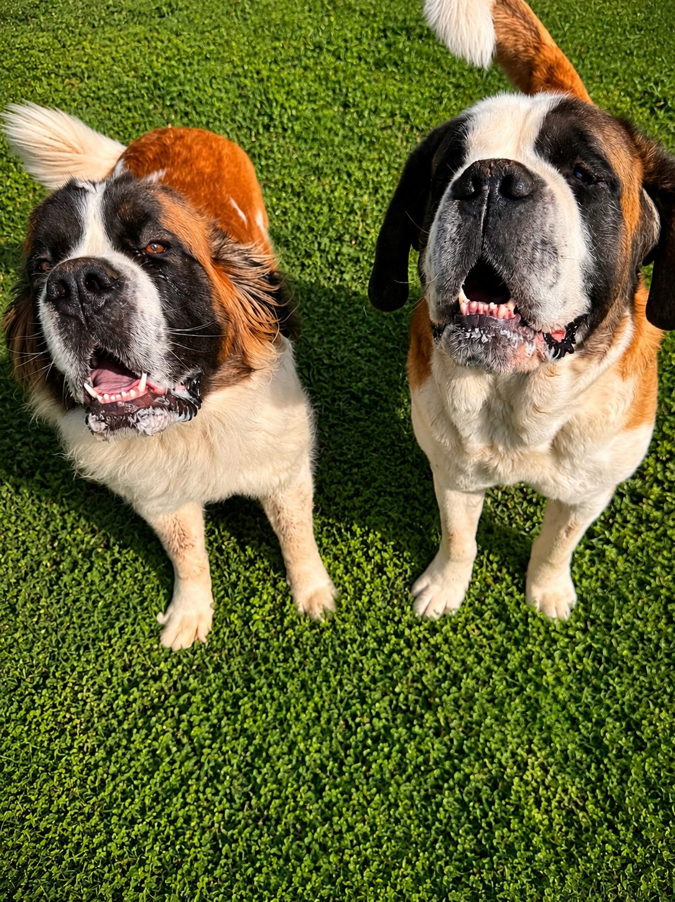
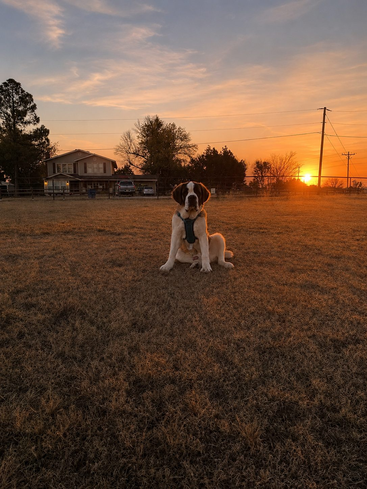

Family Companions
Our Saints
Loved daily, raised around family, and part of the Dixon household.

Loved daily, raised around family, and part of the Dixon household.

Room to grow, time outside, and a family-centered approach.
Gentle, confident, and family-ready personalities.
Honest conversations, responsible care, and breed awareness.
Daily handling, family interaction, and real-life exposure.